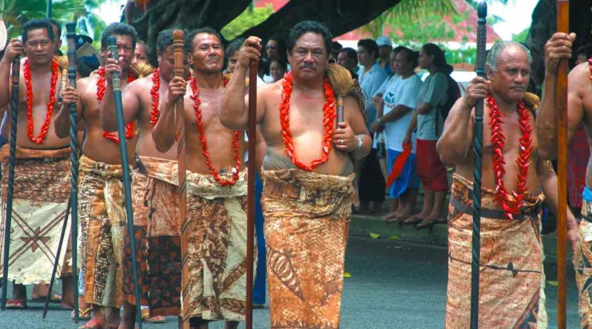

Greeting Word: Kia Ora
Current Population: 5.1 Million
Location: About 4,606 miles (7,412 km) from Hawaii, forms the southwest apex of the Polynesian Triangle.
Size: covers approximately 103,000 square miles (268,000 km²) - about the size of Japan or the U.S. state of Colorado – and consists of two major islands as well as several smaller island groups.
Legend tells us of the first explorer-navigator-discoverer of the islands. According to legend, Maui and his brothers “fished up” the islands from the sea. The North Island is “The Fish of Maui” (a stingray). The South Island is his canoe. Stewart Island is the anchor stone.
Later, in the 10th century, Kupe & Ngake (Ngahue) ventured out southwest from Tahiti, following the traditional navigational instructions left by the hero Maui so many years earlier. The instructions were simple -- they were to keep their bearings towards a certain set of stars in the sky. In their canoe, carved by their own hands, they ventured out into the unknown and reached their destination. From far off, Kupe’s wife sighted land, and the gathering of white clouds around one of the mountain tops. She called out, “He ao! He ao!” (A cloud! A cloud!). Thus was Aotearoa discovered. It’s Maori name means, “Long White Cloud” and is commonly referred to as “The Land of the Long White Cloud”.
Polynesians have been known to set sail in search of new lands, their canoes were provisioned with food and plants for cultivation.
They remained isolated in New Zealand until the arrival of European explorers, the first of whom was the Dutchman Abel Tasman (1642). During that time, they grew in numbers to between 100,000 and 200,000, living almost exclusively on North Island. They adopted the name Maori to distinguish themselves from the Europeans, who after the voyages of the Englishmen Captain James Cook (1769-1777), began to come in greater frequency. Individuals, families, and extended family groups continue to acknowledge one another and are identified as descendants of specific tribal and sub-tribal ancestral leaders. These tribal leaders can trace their genealogy to the original settlers who arrived in multiple waves of migration aboard ocean-voyaging canoes.
It is situated in the South Pacific more than 1,000 miles southeast of Australia, its nearest neighbor. The country is comprised of two main islands – the North and South islands – and a number of small islands, some of them hundreds of miles from the main group. New Zealand is about 1,000 miles long and about 280 miles across at its widest point. The land area is approximately 103,000 square miles – slightly smaller than the state of Colorado and a little larger than the United Kingdom. The current population is 5.1 million, only about 17% of which are native Maori., making them the largest group of Polynesians in the Pacific today.
New Zealand’s climate differs from one part of the country to another. The larger South Island is colder than the North Island. Exceptionally bitter winds sweep the mountain summits of both islands and there is snow in the higher altitudes. Unlike other Polynesian islands, New Zealand experiences four distinct seasons.
Within one to two days drive, one can see glaciers, fiords, snow-capped mountains, vast plains and hills, sub- tropical forests, a volcanic plateau and white-sandy beaches. The spectacular scenery of both major islands has been featured in the Hollywood films, “Lord of the Rings“ & “Hobbit“ trilogies, “Wolverine“, “The Last Samurai“ and more. Aotearoa New Zealand is one of the youngest nations, with voyaging canoes bringing the first settlers from other Polynesian islands, as late as the 12th century.
MARAE: The Courtyard
The mare is defined as a courtyard – the open area in front of a Maori meeting house and also refers to the complex of other buildings surrounding it. Formal and informal interactions between people continue to take place in such settings. They are associated with tribes and families and are located in the historical tribal regions of these groups. All Maori connect to a marae through genealogy. It’s where their parents, grandparents, or ancestors are from. Through generations of intermarriage, Maori are able to connect to more than one marae.
The name of this particular marae is “Te Arohanui o Te Iwi Maori”, meaning, “The Great Love of the Maori People”. The name honors the Polynesian Cultural Center’s founding Maori performing arts group, “Te Arohanui Maori Company which came to Hawai’i in 1963 to assist in the final preparations of the Polynesian Cultural Center’s opening in October of that year.
Fale Nonofo or Fale Afolau:
Family Dwelling House
The Fale Nonofo is the family dwelling house. Tapa is used to partition areas for sleeping. Fala, or mats woven from the dried & softened leaves of the pandanus tree, are placed on the floor each night for sleeping on, and rolled up and placed in the rafters each morning. The Fale Nonofo also serves as the eating-place, where the food is served to the family, after being cooked at the tunoa.
As you observe the inside of this building, notice the cultural craftsmanship achieved by skilled workers under the supervision of the master builder. The master builder is responsible not only for the physical details, but also for the artistry of the building. A building of this size usually takes about 6-8 weeks to complete depending on the number of men working and their skill levels
This particular structure also serves as a workshop in which men carve and women do arts and crafts. You can try your hand at making fire by rubbing two sticks together as demonstrated by the young men of Samoa.
Fale Talimalo & Fale Fono:
Guest House & Meeting House:
FALE TALIMALO: Guest House and FALE FONO: Meeting House (Same building; different purposes) Fale Talimalo means “a house to receive guests.” Not only pre-arranged guests are welcome to stay here, but also a person or group passing by who needs a place to rest. When pre-arranged groups arrive, the family (immediate or extended or the village) will prepare leis, food and special decorations. A special welcome ceremony would be included if the guest is a high ranking chief.
When unexpected guests arrive, the immediate family will quickly prepare food and water. Bedding is provided if the stay is extended. After the guests are fed and have rested, the chief will inquire as to the purpose of the unexpected visit and the intended length of stay. He will then offer any further assistance as needed.
When not being used to host visitors, this building is also used as the Fale Fono, meaning, “meeting house.” As a Fale Fono, this building is to serve the chiefs of the village as a gathering place to discuss the affairs of the village. The discussions include monitoring the performance of individual families, the safety of all the villagers, each family beautifying their yards, planting food crops and raising meat animals to encourage self-reliance and generally maintaining order in the village.
The posts surrounding the structure have special significance in Samoa. During meetings and ceremonies, participants sit with their backs to a post representing their rank, family, or home village. Some posts are reserved for various people of prestigious rank. The post centered at the left half of the entrance is for the highest-ranking person in the visiting party, usually a chief. The post immediately opposite is for the highest-ranking person of the home village, again usually a chief. The posts on either side of the main entrance post are for the chief’s spokesmen known as the talking chiefs. The next two posts on the left are for other local talking chiefs. Other minor participants sit on mats spread around the outside rim. An interesting custom in Samoa is the fourth post from the left, known as the stranger’s post. If a stranger comes into a meeting unannounced and demands it, the post must be surrendered to him. From the three posts in the middle any food to be served during the meeting is dispensed.
The kava ceremony takes place in this building. Not only does it represent the highest form of welcome to guests, it also represents a unity of purpose. The significance lies in each chief drinking from the same coconut cup, representing a solemn commitment to ally himself with the consensus of the council. It is a sign of loyalty and symbolizes the highest ideals of all participants and the village people they represent.
The floor of this building is typical of what is found in Samoa. River pebbles and stones are gathered from the nearby rivers and streams and spread to cover the interior area. The rocks help keep the house cool and dry. If water does seep in, it spreads out under the rocks rather than pooling into hard-to-clean puddles. Mats are placed on top of the rocks to provide comfort. The thicker the layer of mats, the softer the seating area.

Fine mats, or ie toga, used for ceremonies in this building, require special weaving skills. The pandanus leaves are cleaned, boiled, and bleached in the sun until the desired shade of whiteness is reached. The leaves are then flattened and left to season for about a week. The weaver then takes a shell or possibly the sharp, hard wing of a coconut beetle and cuts the leaves into fine strands for weaving. Some of the mats are woven so fine that they have the appearance of expensive linen. After a mat is completed, it is given a name and used as the traditional currency of Samoa. Mats are given as gifts at weddings, funerals, the dedication of buildings, chiefly ceremonies, and other special occasions. It takes many years of work to make an exceptionally fine mat.
MAOTA O LE ALI’I or MAOTA TOFA:
Chief’s House
Matai is the Samoan word for leader or chief. There are two types of matai in Samoa - the Ali’i and the Tulafale. The Ali’i is the name of the highest title in a family. Those who hold an Ali’i title preside at council meetings, oversee proceedings, make the final important decisions (after consulting with other matai), and pass their instructions along in whispers to the High Talking Chiefs, or Tulafale, who are the mouthpieces of the Ali’i. They are expected to be eloquent and skilled in the art of lauga (oration). The Tulafale represent the Ali’i as his spokesperson. The political system of Samoa was much more open than in any other Polynesian group in the Pacific. Rather than being solely hereditary, it is possible for people to rise to chiefly status by virtue of his or her abilities, loyalty to the village, and the service one provides to the families in the village. The title of chief is conferred upon any eligible member of the group, including women, with the common consent of the village and the chief’s council. The chiefs are responsible for the general welfare of the group.

The Maota Tofa is the Chief’s house. In Samoa, this building is usually elevated 5-8 feet signifying the Chief’s prestige. A building of this size sometimes takes 3–4 months to build depending on the manpower. The master builder, called the Tufuga, plans and instructs all workers of the measurements of each beam and pole. He determines the fashion and the design of the sennit lashings, which hold all joints in place. The way the beams are fastened together gives support to every 6--7 feet of the roof and strengthens the roof against the strong winds and heavy rain. The large beams and the poles are cut from the native trees of Samoa. The ifilele (Iron wood), koi (Mahogany), niu (Coconut), fau (Balsom).
There are three main reasons why a chief would have a building as large and beautiful as this. (1) The chief is a well-respected individual by his family and the community and the building represents their support and goodwill. (2) His title is of a royal line, or it is the highest in the family, village or district, which he represents. (3) It represents the wealth of a strong family group or unified collection of villages.
The chief’s house was simply furnished. Because finely woven mats were exchanged as currency, the more mats a chief possessed and displayed, the richer he was. They were important also as a method of paying tribute at weddings, funerals, and other public events.
Only the chief would sleep on a bed, which is made of mats stacked to a desired height. Pillows were made of bamboo and actually supported the head at the back of the neck. Samoans believe that sleeping on a hard surface will give you a strong and straight posture.
- TO’OTO’O (or Staff) - It symbolizes the authority to speak.
- FUE (or swish) - It symbolizes the power of speech.
- ULA FALA (or pandanus seed lei) - It symbolizes one who has been given an ordained title.
- TANOA FAI AVA (ava bowl) - The chiefs perform a ritual ceremony of the ava in which a special drink is mixed in this bowl. It symbolizes peace, brotherhood and unity
- TAO (or spear) - It represents each chief as a warrior and shows that he is prepared and ready to fight for his family, his freedom and his village.

War clubs were favored in tribal wars because Samoans preferred hand-to-hand combat. Throwing weapons was disdained because it was considered cowardly. The clubs displayed here are carved from Hawaiian wood. Notice that the club heads are patterned after things found in nature like the pineapple and the sea urchin. Today, war clubs are finished with a coat of varnish or lacquer to preserve it and give it a shiny finish. Traditionally, they were rubbed with a cowry shell for a special gloss.
Tatau: The Art of Tattooing
Samoans have been practicing the art of tattooing for over 2000 years. Two Fijian women, Taema and Tifaiga, introduced the practice of tattooing to Samoa. Today, Samoan males desiring chiefly status or leadership roles are generally tattooed. Many other men acquire tattoos for their appeal as a mark of adulthood, a symbol of cultural identity, a revival of an ancient craft, and an acceptable body decoration of beauty.
Before the arrival of missionaries, it was compulsory for all males to be tattooed. It was considered a decorative art form, which visibly denoted rank and status. Young men were tattooed between the ages of 14 and 18 when they had stopped growing so that the intricate designs would not stretch. Tattooing extended from the hips down to the knees. Although there has been a revival of tattooing, it still does not equal its former acceptance
Tattooing is a painful process. The Samoan tattoo master creates the designs with a comb-like tattoo instrument. The larger the comb, the greater the area on the skin is covered with fewer strokes. He punctures the skin by tapping the instrument with a small mallet.
Samoan women were also tattooed, but usually in lesser quantity.
Terms:
Ali’i – High chief who makes decisions for the family or village.
Amerika Sāmoa – American Samoa, a U.S. territory made up of eastern Samoan islands.
Ava – A ceremonial drink made from the ava root; symbolizes peace and unity.
Fale – Traditional Samoan house, often open-sided with domed, thatched roofs.
Fale Fono – Village meeting house for chiefs' gatherings and important discussions.
Fale Nonofo / Fale Afolau – Family dwelling house; used for sleeping and daily life.
Fale Talimalo – Guest house used to welcome and host visitors.
Fa’a Sāmoa – “The Samoan Way”; the traditional lifestyle based on respect, family, and service.
Fala – Sleeping mats woven from pandanus leaves.
Fue – Whisk made from coconut fiber, symbolizing eloquence.
Ie Tōga – Fine woven mats used as ceremonial gifts and currency.
Ifilele, Koi, Fau – Native hardwood trees used for building structures and tools.
Lauga – Ceremonial oration or formal speech, often given by Tulāfale.
Maota o le Ali’i / Maota Tofa – Chief’s house; usually elevated, symbolizing rank and respect.
Malae – Village courtyard used for gatherings, ceremonies, and traditional events.
Matai – Chief or leader; two main types: Ali’i and Tulāfale.
Niu – Coconut tree; every part is used for food, shelter, tools, and crafts.
Nu’u – Village; the basic social unit in Samoa.
Pandanus Tree – Source of leaves for weaving mats and ceremonial items.
Pola – Woven coconut-leaf blinds used to shield from weather or for privacy.
Sāmoa – Independent island nation in Polynesia (formerly Western Samoa).
Tanoa Fai Ava – Kava bowl used in ceremonial ava preparation.
Taema & Tifaiga – Mythical Fijian sisters who brought the practice of tattooing to Samoa.
Tatau – Traditional Samoan tattoo; denotes maturity, identity, and status.
Tao – Spear; symbolizes a chief's readiness to defend his village.
To’oto’o – Staff symbolizing authority to speak.
Tufuga – Master builder responsible for construction and design of fale.
Tulāfale – Talking chief; the orator and spokesperson for the Ali’i.
Tunoa / Umu Kuka – Outdoor kitchen or earth oven where men cook traditional meals.
Ula Fala – Necklace made from pandanus seeds, symbolizing a titled person.
Umu – Earth oven made with hot stones used for traditional cooking.